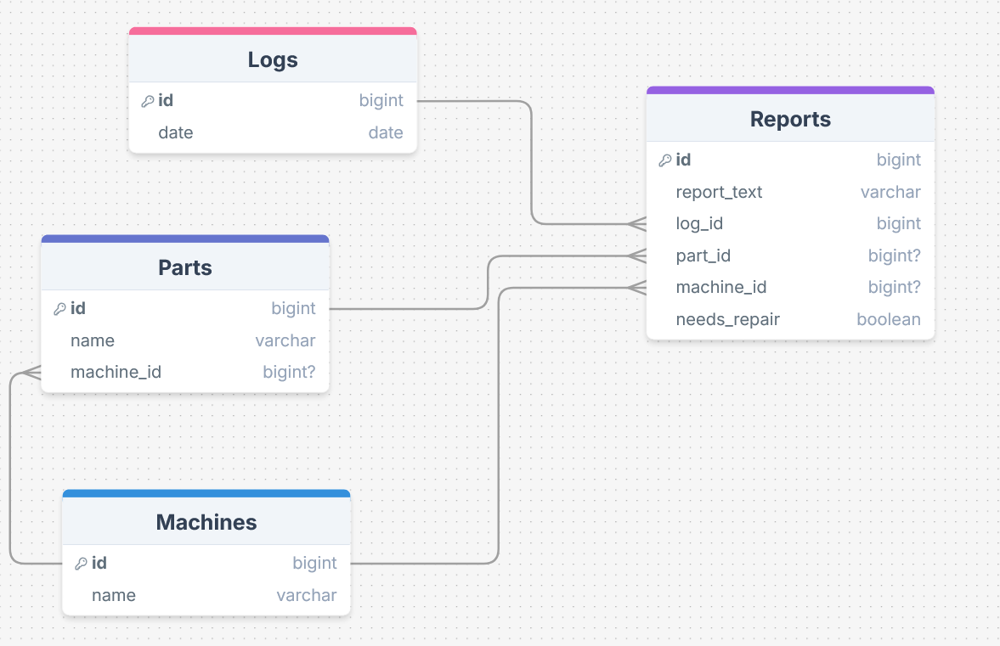
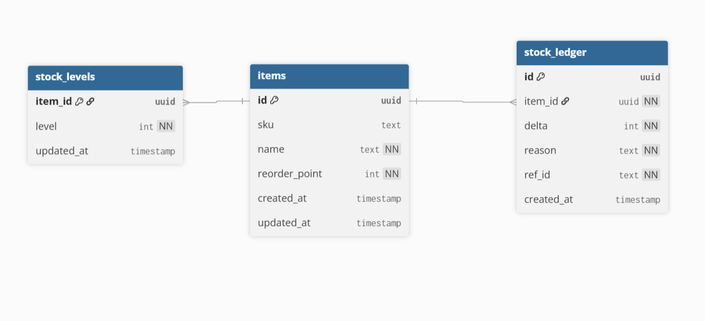

The Database Team serves as the backbone of the enterprise system, providing persistent data storage and integration between the Facilities, Inventory, POS, HR, and Transaction teams. In Sprint #2, the primary goal was to implement version-controlled database migrations and integrate schemas received from the Facilities and Inventory Management teams.
The current system runs on PostgreSQL 15 with the following integrated schemas:

